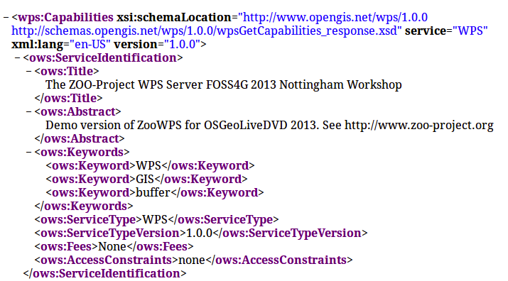

Table des matières
Pour être capable de suivre le matériel courant, vous devrez télécharger et décompresser une archive contenant l’ensemble de données, le ZOO-Kernel et les services requis. Il a été mis à la disposition spécifiquement pour ce workshop et est disponible à l’adresse: http://www.zoo-project.org/dl/ws2013-1.tar.bz2.
Vous devez utiliser les commandes suivantes pour télécharger puis décompresser l’archive et l’obtenir extraite avec les bons privilèges:
wget http://www.zoo-project.org/dl/ws2013-1.tar.bz2
sudo tar -xvjpf ws2013-1.tar.bz2 -C /
psql -f /var/www/temp/ws2013.sql pgrouting
Comme déjà dit dans l’introduction, l’OSGeoLive a été démarré sur votre ordinateur, vous permettant d’utiliser le ZOO-Kernel directement dans un environnement de développement.
Note
nous allons utiliser les noms ZOO-Kernel ou script zoo_loader.cgi sans aucune distinction dans ce document.
Les paramètres généraux du ZOO-Kernel sont définis dans le fichier main.cfg situé dans le même répertoire que le ZOO-Kernel, donc dans /usr/lib/cgi-bin/. Vous pouvez voir un contenu main.cfg typique dans ce qui suit:
1 2 3 4 5 6 7 8 9 10 11 12 13 14 15 16 17 18 19 20 21 22 23 24 25 26 27 28 29 30 31 32 33 | [main]
lang=en-US,fr-FR,ja-JP
version=1.0.0
encoding=utf-8
serverAddress=http://localhost/zoo/
dataPath=/var/www/data
tmpPath=/var/www/tmp
tmpUrl=../tmp
cacheDir=/var/www/cache/
mapserverAddress=http://localhost/cgi-bin/mapserv
msOgcVersion=1.0.0
[identification]
title=The ZOO-Project WPS Server FOSS4G 2013 Nottingham Workshop
keywords=WPS,GIS,buffer
abstract=ZOO-Project platform 2013 .See http://www.zoo-project.org for more informations
accessConstraints=none
fees=None
[provider]
positionName=Developer
providerName=ZOO-Project
addressAdministrativeArea=Lattes
addressDeliveryPoint=1280 Av. des Platanes
addressCountry=fr
phoneVoice=+33670082539
addressPostalCode=34970
role=Dev
providerSite=http://www.zoo-project.org
phoneFacsimile=False
addressElectronicMailAddress=gerald.fenoy@geolabs.fr
addressCity=Lattes
individualName=Gérald FENOY
|
Le fichier main.cfg contient les informations de métadonnées à propos de l’identification et du fournisseur mais aussi des paramètres importants. Le fichier est composé de différentes sections, à savoir [main], [identification] et [provider] par défaut.
lang: les langages supportés, séparés par une virgule (le premier est celui par défaut),
version: la version du WPS supportée,
encoding: l’encodage par défaut des réponses WPS,
serverAddress: l’url pour accéder à votre instance du ZOO-Kernel,
dataPath: le chemin pour stocker les fichiers de données (quand le support de MapServer est activé, ce répertoire est utilisé pour stocker les mapfiles et les données).
tmpPath: le chemin pour stocker les fichiers temporaires (comme une ExecuteResponse quand storeExecuteResponse a été défini à true),
tmpUrl: une url relative au serverAddress pour accéder au fichier temporaire,
cacheDir: le chemin pour stocker les fichiers de requête mis en cache [1] (optionnel),
mapservAddress: votre adresse locale de MapServer (optionnel),
msOgcVersion: la version pour toutes les sorties des services Web OGC supportées [2] (optionnel).
les sections [identification] et [provider] sont spécifiques à la métadonnée OGC et devraient être définies [3].
De toute évidence, vous êtes libres d’ajouter de nouvelles sections à ce fichier si vous avez besoin de plus. Néanmoins, vous devez savoir qu’il y a quelques noms spécifiques, que vous devez utiliser seulement pour des besoins spécifiques: [headers], [mapserver], [env], [lenv] et [senv].
Warning
[senv] et [lenv] sont utilisés / produits à l’exécution en interne par le ZOO-Kernel et doivent être défini seulement par le code de Service.
La section headers est utilisée pour définir vos propres en-têtes de réponse HTTP. Vous pouvez jeter un oeil aux en-têtes retournés un site web tel que http://www.zoo-project.org en utilisant l’outil en ligne de commande curl, par exemple, et vous verrez un en-tête spécifique X-Powered-By: Zoo-Project@Trac.
Warning
Il n’ya aucune raison de définir des en-têtes de base tels que Content-Type ou encoding comme ils seront remplacés à l’exécution par le ZOO-Kernel.
La section mapserver est utilisée pour stocker des paramètres de configuration mapserver spécifiques comme PROJ_LIB et GDAL_DATA ou n’importe quel autre que vous vouliez définir pour faire fonctionner votre MapServer.
Note
la section mapserver est principalement utilisée sur les plates-formes WIN32
La section env est utilisé pour stocker les variables d’environnement spécifiques que vous souhaitez mettre en avant pour charger votre fournisseur de services et pour exécuter votre service. Un exemple typique, c’est quand votre service nécessite d’accéder à un serveur X fonctionnant sur framebuffer, alors vous aurez à définir la variable d’environnement DISPLAY, dans ce cas, vous devez ajouter la ligne DISPLAY=:1 dans votre section [env].
Le lenv est utilisé pour stocker les informations d’exécution automatiquement définies par le ZOO-Kernel avant de lancer votre service et peut être accéder/mis à jour depuis ceci:
sid: l’identifiant de service unique,
status: la valeur de progression courante (valeur entre 0 et 100, pourcents),
cwd: le répertoire de travail courant du ZOO-Kernel,
message: un message d’erreur quand SERVICE_FAILED est retourné (optionnel),
cookie: le cookie que votre service veut retourner au client (à des fins de suivi ou d’authentification).
Le senv est utilisé pour stocker les informations de session côté serveur. Vous pouvez ainsi y accéder automatiquement depuis le service si le serveur est interrogé en utilisant un cookie valide (comme défini dans lenv > cookie). Le ZOO-Kernel stockera sur le disque les valeurs définies dans la liste clé-valeur senv, puis les chargera et ajoutera dynamiquement leur contenu à celui disponible dans le main.cfg. La section senv devrait contenir au moins:
- XXX: l’identifiant de session unique où XXX est le nom inclut dans le
returned cookie.
conf["lenv"]["cookie"]="XXX=XXX1000000; path=/"
conf["senv"]={"XXX": "XXX1000000","login": "demoUser"}
Cela signifie que le ZOO-Kernel créera un fichier sess_XXX1000000.cfg dans le cacheDir et retournera le cookie spécifié au client. Chaque fois que le client interrogera le ZOO-Kernel en utilisant le cookie, il chargera automatiquement la valeur stockée avant d’exécuter votre service. Vous pouvez ensuite accéder facilement à ces informations à partir de votre code source de service. Cette fonctionnalité ne sera pas utilisée dans la présentation suivante.
Vous pouvez interroger le ZOO-Kernel en utilisant le lien suivant depuis votre navigateur Internet:
http://localhost/cgi-bin/zoo_loader.cgi?Request=GetCapabilities&Service=WPS
Vous devriez obtenir un document XML de “Capabilities” valide, ressemblant à ce qui suit :
Merci de noter que certaines noeuds de processus sont retournés dans la section ProcessOfferings, comme certains sont déjà disponibles sur le DVD OSGeoLive. Vous pouvez également exécuter une requête GetCapabilities depuis la ligne de commande, en utilisant la commande suivante:
cd /usr/lib/cgi-bin
./zoo_loader.cgi “request=GetCapabilities&service=WPS”
Le même résultat que dans votre navigateur sera retourné, comme montré dans la capture d’écran suivante:
Invoquer le Kernel ZOO depuis la ligne de commande peut être utile pendant le processus de développement de nouveaux services.
Notes de bas de page
| [1] | lorsque vous utilisez les requêtes GET passées via xlink:href, le ZOO Kernel-exécutera la demande une seule fois, la première fois, vous demanderez cette ressource et elle stockera sur le disque le résultat. La prochaine fois que vous aurez besoin de la même fonction, le fichier de cache sera utilisé pour exécuter votre processus plus vite. Si cachedir n’a pas été précisé dans main.cfg alors la valeur de tmpPath sera utilisée. |
| [2] | depuis la version 1.3-dev, quand MapServer est activée, votre service peut automatiquement retourner une requête WMS, WFS ou WCS pour exposer vos données. Vous pouvez définir ici le numéro de version spécifique que vous souhaitez utiliser pour interroger la configuration de votre MapServer local. Il dépend surtout de la capacité du client à gérer la version spécifique des services Web OGC. |
| [3] | depuis la version 1.3dev, quand MapServer est activé, les mêmes métadonnées seront utilisées pour définir les métadonnées pour les services Web OGC. |
| [4] | Si vous n’êtes pas familier avec le ZOO-projet, vous pouvez passer cette partie et y revenir après la section suivante. |
{kind=link}
{kind=link}